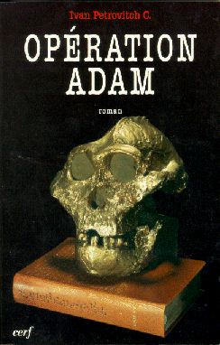

Fiktion: Operation Adam
Operation Adam, by Ivan Petrovitch C. (the pseudonym of a French paleontologist). Published by Cerf, 1997, pp 273.Warnung: Diese Seite behandelt die Handlung von Operation Adam im Detail, sodass Sie sie möglicherweise überspringen sollten, wenn Sie das Buch lesen möchten. Das Buch ist derzeit nur auf Französisch erhältlich.
Plot

Tucson, Arizona, is the site of the 12th International Conference on Human Evolution, and virtually all of the important hominid fossils are present. On the first day of the exhibition, someone notices that one of the "fossils" is actually a cast, and it is soon realized that all the fossils have been stolen and replaced by casts. The frantic conference organizers call in law enforcement, who set about finding the fossils. One of the perpetrators is a graduate student, Samuel Lev, who was watching over the fossils the previous night. Lev disappears, but is discovered unconscious after a car accident. His personal computer contains details about a secret society called the Protectors of Adam, dedicated to preserving the Genesis account of the origin of man by any means.Es stellt sich heraus, dass die Beschützer Adams auch für das Piltdown-Man-Verbrechen verantwortlich waren, einen missglückten Versuch, den Heidelberger-Mann-Kiefer während des Zweiten Weltkriegs zu zerstören, sowie für das Verschwinden der Peking-Mann-Fossilien während des Zweiten Weltkriegs.
Hinweise führen die Suchenden zu einem Versteck im Zion National Park, wo alle Fossilien unversehrt entdeckt werden, zusammen mit den längst verloren geglaubten Fossilien des Pekinger Menschen.
Ein dritter „Affenprozess" findet im folgenden Jahr statt (die ersten beiden waren der 1925 Scopes- Prozess und der 1981 Arkansas-Prozess). Aus Gründen, die nicht geklärt werden, versucht das Gericht nicht einmal zu entscheiden, ob die Angeklagten schuldig oder unschuldig sind. Stattdessen widmet sich der gesamte Fall der Debatte über die Vorzüge des Kreationismus gegenüber der Evolution. Ankläger und Verteidigung diskutieren die Hauptthemen der Kreationismus/Evolution-Debatte, wie den Fossilbericht, die menschliche Evolution, die Sintflut und die Arche Noah, die radiometrische Datierung und den Ursprung des Lebens.
Samuel Lev gibt während des Prozesses Zeugnis. Während seiner Genesung hat er den Kreationismus aufgegeben und entschuldigt sich nun für sein Handeln.
Während des Prozesses drohen Gewalttaten von Kreationisten, und schließlich wird ein Zeitungsreporter, der sich kritisch gegenüber dem Kreationismus geäußert hat, entführt und schwer verletzt, indem er auf einem Saguaro-Kaktus gekreuzigt wird.
Das Gericht fällt ein Urteil, das alle Angeklagten schuldig spricht und sie entsprechend ihrer Mitwirkung strafrechtlich verurteilt, mit Haftstrafen, die von 10 Jahren für die Haupttäter bis hin zu kurzen ausgesetzten Haftstrafen reichen. Zudem stellt es fest, dass die Wörter „wissenschaftlicher Kreationismus" nicht zusammen verwendet werden dürfen.
Kommentare
Although a plausible premise for a fictional work, it is highly unlikely that all the original hominid skulls will ever come together in one place. The closest attempt so far was the 1984 Ancestors exhibit at the American Museum of Natural History in New York. Even then, at least half of the major hominid fossils were absent, usually because their curators did not wish to subject them to the risks of travel. The book implies that alle the hominid material is stolen, but this is also impausible, as there are literally thousands of such fossils. Most of them, of course, are isolated bones and teeth, and are not very significant. The really important fossils are rare enough that they could all conceivably be exhibited together, were it not for the difficulties involved in actually getting them in the one place.Deutlich weniger plausibel – ja, völlig unplausibel – ist die Leichtigkeit, mit der die Fossilien gestohlen werden könnten. Die gesamte Sammlung von Schädeln wäre unschätzbar wertvoll und unersetzlich, doch ich schätze, dass ihre Versicherungswert viele zehn Millionen Dollar betragen würde. Sollte ein solches Exponat jemals stattfinden, können wir sicher sein, dass die Sicherheitsvorkehrungen weit, weit strenger sein werden als in diesem Buch, in dem ein einzelner Student über Nacht für die gesamte Sammlung verantwortlich ist.
Und egal wie oxymoronisch der Begriff „Creation Science" auch klingen mag, ich kann mir nicht vorstellen, dass ein amerikanisches Gericht jemals seine Verwendung auch nur von einem verurteilten Angeklagten verbieten würde, geschweige denn in der gesamten Gesellschaft, wie es in diesem Buch der Fall ist. Ein solches Urteil scheint in offenkundigem Widerspruch zum 1. Zusatzartikel der US-Verfassung zu stehen, der die Meinungsfreiheit garantiert.
Schließlich glaube ich, dass dieses Buch Kreationisten als gewalttätiger und rassistischer darstellt, als es gerechtfertigt ist. Kreationisten versuchen gerne, die Evolution mit dem Stigma der Rassefeindlichkeit zu beschmutzen (und evolutionäres Denken wurde in der Vergangenheit oft missbraucht, um Rassismus zu rechtfertigen), doch heutzutage scheinen viele Rassisten aggressiv christlich und sogar kreationistisch zu sein. Dennoch ist zwar wahr, dass viele Rassisten Kreationisten sein können, aber das Gegenteil trifft nicht zu, und die kreationistische Bewegung ist in keinem nennenswerten Maße rassistisch.
Dies ist kein ausgewogenes Buch, und es soll auch nicht eines sein (obwohl das nichts Schlechtes ist; Bücher der Schöpfungslehre sind ebenfalls nicht für ihre Ausgewogenheit bekannt). Die Schöpfer sind unangenehm dargestellt, und während des Prozesses werden sie durch die Argumente ihrer Gegner ständig geschlagen, in Debatten unterlegen und zum Schweigen gebracht. Wenn nur echte Schöpfer so leicht korrigiert werden könnten.
Siehe den Eintrag für dieses Buch bei www.amazon.fr
Zurück zur Seite Paläoanthropologische Fiktion.
Diese Seite ist Teil des FAQ zu fossilen Menschenaffen im TalkOrigins-Archiv.
Startseite |
Arten |
Fossilien |
Kreationismus |
Lektüre |
Referenzen
Illustrationen |
Neuigkeiten |
Feedback |
Suche |
Links |
Fiktion
http://www.talkorigins.org/faqs/homs/opadam.html, 11/11/97
Copyright © Jim Foley
|| E-Mail mir